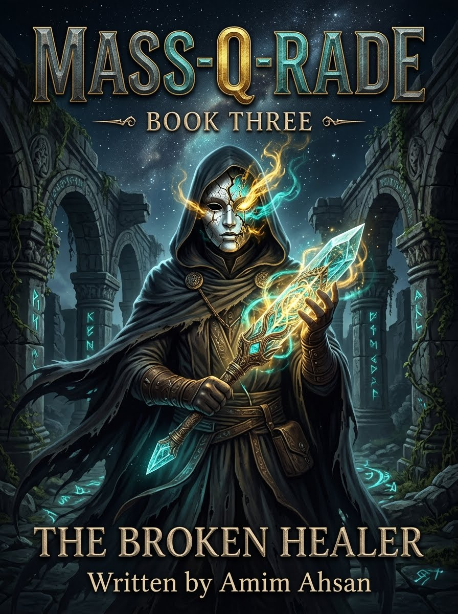

THE BROKEN HEALER
Dr. James Okafor & The Anatomy of British Injustice
Born in a Peckham council flat to a Nigerian bus driver and a nurse, Dr. James Okafor becomes the doctor the NHS never wanted: one who treats people rather than symptoms. When the institution that raised him turns on him — complaints, a GMC inquiry, and the murder of his mother — the healer is recruited into Mass-Q-Rade and reborn as The Broken Healer: the shadow that exposes the system from inside.
Complete 25-Chapter Directory
Browse summaries, settings, word counts, and key scenes across Parts I, II, III, IV, and V.
BIO-SPOOF & TELEMETRY CONSOLE
Interactive terminal simulating The Broken Healer's sub-dermal neural interface and NHS records override protocols.
Character & Key Figure Dossiers
Profiles for Dr. James Okafor / The Broken Healer, Grace Okafor, Dr. Richard Thornton, Sabrina, Q, and Dr. Michael Adeyemi.
Narrative Arc Timeline (1985 – 2026)
From a Peckham council flat to the NHS, Geneva, and the BMA — the making of the Broken Healer.